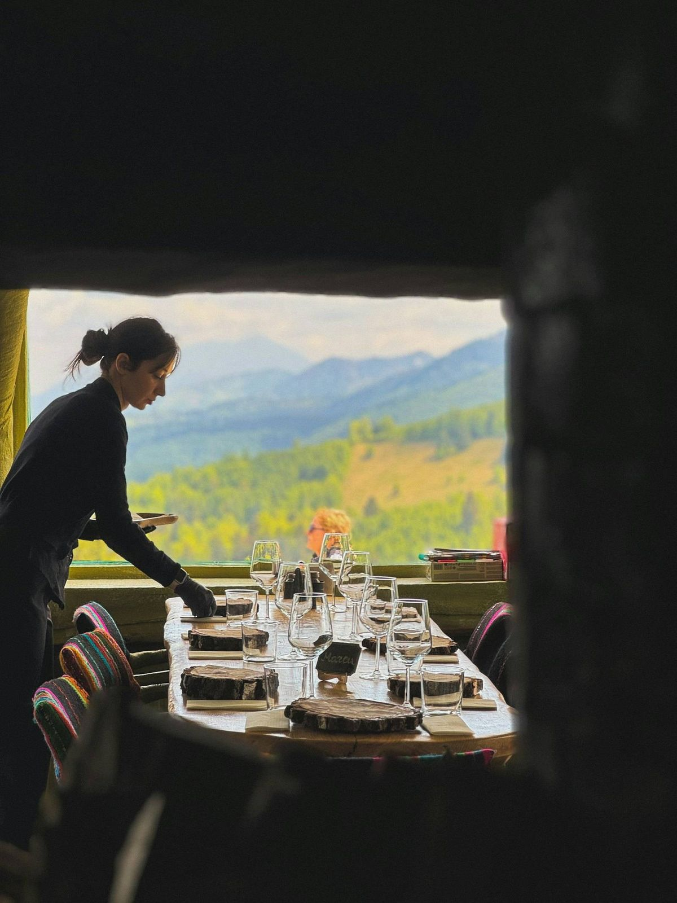

Taradhura / Dining
The Long Room, and the fire at the end of it.
One 14-metre table, two fireplaces and glass on three sides. Chef Kamala Rawat cooks Kumaoni food the way her mother did, mostly from within a kilometre.

06:20 The day’s meals
When and where
08:40 A dinner this week
Tonight’s Kumaoni table
Menus change with the garden. Tell us about allergies when you book; we cook vegan, Jain and gluten-free without fuss.
11:00 The kitchen garden
Four terraces, a third of an acre, most of your dinner.
Govind has worked the garden below the Long Room since before we built it. Greens in spring, beans and herbs in May, gourds and corn in the monsoon, rajma and chillies in autumn. Guests are welcome any morning; pick for your own dinner if you tell the kitchen by noon.
The garden, month by month13:30 Chef Kamala Rawat
“Our food was cooked for people who walked all day. I just let it take the time it needs.”
Kamala grew up in a village two ridges east and cooked in Delhi for twelve years before coming home. She runs the Kumaoni kitchen class every morning except Monday.
Cook with Kamala